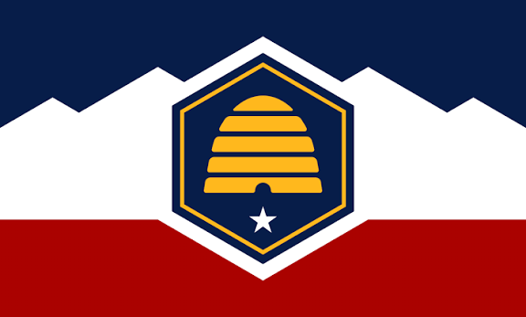

Victor O. Fontes
About Me
My name is Victor O. Fontes. I am from Mexico and live in Utah, United States. I currently work for a company that sells and installs windows; I am an installer. I enjoy spending quality time with my family, traveling, going to the chapel and the temple, and socializing with friends. I like sports and learning languages. I enjoy challenges and reading.
Utah, United States

Utah is a state in the western United States known for its beautiful mountains, national parks, and outdoor recreation. It is a great place to live and enjoy nature with family and friends.